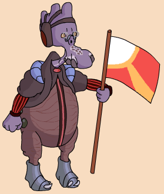

|
Nick name |
Bumpy |
|
Classification |
Nuknog |
|
Gender |
Male |
|
Height |
4'2'' |
|
Home World |
Sump |
|
Podracer |
Vokoff-Strood Plug-8G 927 Cluster Array |
Ark Roose was a typical dim-witted Nuknog. The restrictive government of Sump only allowed Ark to race because they thought it would be good publicity. However, Ark Roose's stupidity was quite apparent. Ark was very paranoid, especially of Anakin Skywalker. Anakin had come close to beating Roose in a previous race, and Roose couldn't stop thinking about this. Diva Funquita, on a mission for her master Gardulla the Hutt, payed Ark Roose 50 wupiupi to sabotage Anakin's pod. While looking for Anakin's pod in the podracer hanger, Ark found Ben Quadinaros' pod, which was also a late entree. Assuming the junky rental pod was Anakin's, Ark Roose tinkered with the power couplings. Ark's paranoia showed on the second lap of the race when Ark stopped in the pits for no particular reason. His pit droids motioned him back into the race. On the 3rd lap, Dud Bolt attempted to crash into Ark's pod in the dangerous narrow turn called the Coil. He succeeded, but caused himself to crash at the same time. Both survived and were taken to the Mos Espa medical center, where they recovered from their wounds. Ark Roose did not take part in Sebulba's 'revenge tour' for reasons unknown.